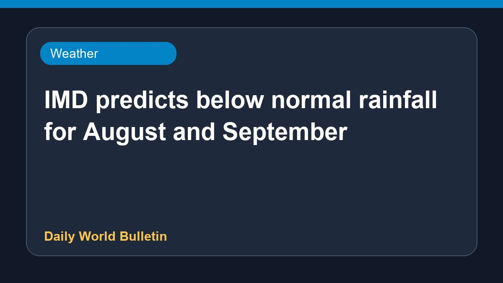

IMD predicts below normal rainfall for August and September

According to the India Meteorological Department, rainfall across the country during the months of August and September is likely to remain below normal. Weather officials have indicated this trend based on current meteorological conditions. Further updates regarding regional distribution and monthly forecasts are expected to be released by the authorities in due course. Detailed information on specific agricultural impacts and state-wise predictions remains limited at this stage.
Original source: Weather News Sources
August-September rain likely to be below normal, says IMD | India News - Hindustan Times ↗
August-September rain likely to be below normal, says IMD | India News - Hindustan Times ↗